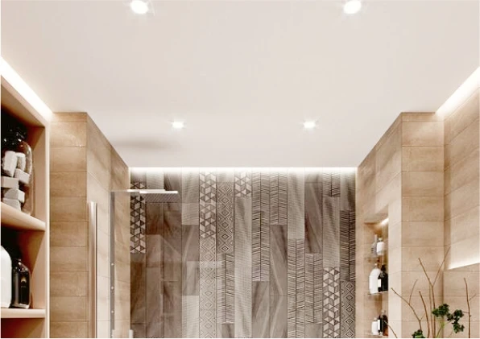
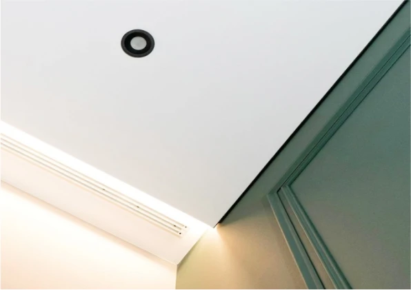
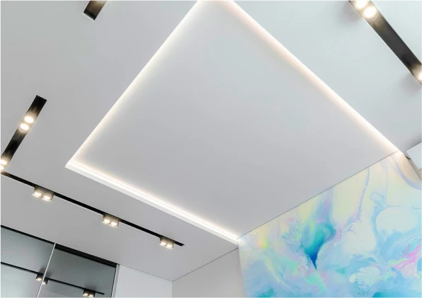
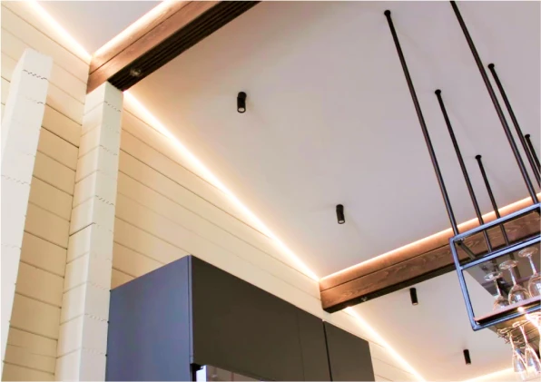

Подсветка по периметру
Смягчают восприятие периметра и зрительно прибавляют площадь

Подсветка закарнизного пространства
Светодиодная лента встроенная в нишу создаёт эффект солнечных лучей

Подсветка ниши
Позволяет выделить определённый участок и подчеркнуть сложную потолочную конструкцию

Зонирование пространства
При помощи светотехники можно разделить помещение на нужные зоны и привлечь внимание на один участок